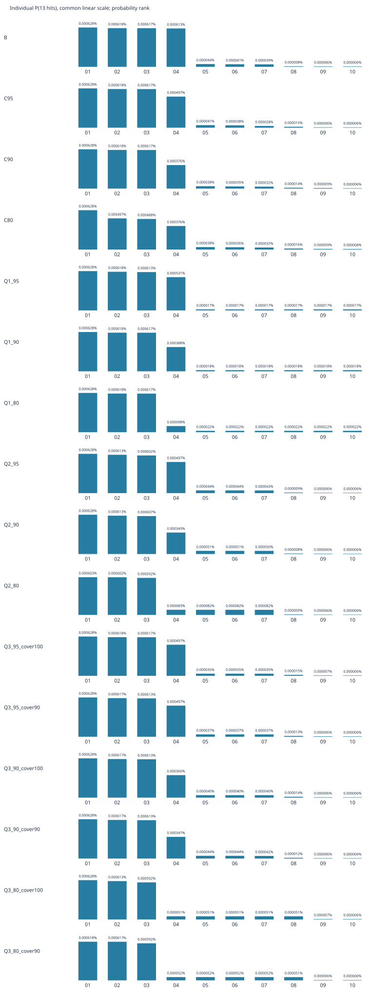

第1670回のみ。元予測・試合別枚数・D総数38・相異なる10券を維持。00は購入対象外。D本数上下限・均等化・グループ制約は使用せず、正式版や購入記録は変更していません。
| mode | p13 | retention_percent | p12 | p11 | D_count_coverage | minimum | median | bottom5_sum | bottom5_share | D_counts |
|---|---|---|---|---|---|---|---|---|---|---|
| B | 0.002619% | 100 | 0.048446% | 0.422167% | 8.594532% | 0.00000585% | 0.00004231% | 0.00010060% | 3.841449% | 0/0/0/0/1/1/0/11/13/12 |
| C95 | 0.002493% | 95.18771 | 0.046902% | 0.416388% | 87.541443% | 0.00000610% | 0.00003913% | 0.00009312% | 3.735570% | 0/0/0/1/2/3/4/5/10/13 |
| C90 | 0.002372% | 90.57884 | 0.045043% | 0.403437% | 91.690284% | 0.00000613% | 0.00003655% | 0.00009576% | 4.036898% | 0/0/0/2/3/4/5/6/7/11 |
| C80 | 0.002129% | 81.28594 | 0.040954% | 0.370853% | 99.050262% | 0.00000806% | 0.00003722% | 0.00010134% | 4.760508% | 0/1/1/2/3/4/5/6/7/9 |
| Q1_95 | 0.002491% | 95.12459 | 0.046847% | 0.415684% | 28.642157% | 0.00001695% | 0.00001698% | 0.00008482% | 3.404869% | 0/0/0/0/5/6/7/7/7/6 |
| Q1_90 | 0.002357% | 90.01018 | 0.046475% | 0.427798% | 29.558133% | 0.00001782% | 0.00001789% | 0.00008927% | 3.787074% | 0/0/0/0/7/5/8/7/6/5 |
| Q1_80 | 0.002095% | 80.00418 | 0.041254% | 0.387430% | 72.804831% | 0.00002243% | 0.00002247% | 0.00011220% | 5.355273% | 6/0/0/0/8/3/5/4/4/8 |
| Q2_95 | 0.002491% | 95.10377 | 0.048077% | 0.433126% | 32.220878% | 0.00000585% | 0.00004354% | 0.00010733% | 4.309403% | 0/0/0/0/1/3/1/11/10/12 |
| Q2_90 | 0.002362% | 90.1791 | 0.048001% | 0.453827% | 25.231377% | 0.00000585% | 0.00005057% | 0.00012092% | 5.120204% | 0/0/0/0/1/2/1/12/11/11 |
| Q2_80 | 0.002145% | 81.92673 | 0.042885% | 0.407293% | 8.621691% | 0.00000585% | 0.00008210% | 0.00018423% | 8.587021% | 0/13/0/0/1/0/1/12/10/1 |
| Q3_95_cover100 | 0.002491% | 95.13113 | 0.046947% | 0.418246% | 87.541443% | 0.00000610% | 0.00003487% | 0.00009736% | 3.907908% | 0/0/0/1/3/4/2/5/10/13 |
| Q3_95_cover90 | 0.002491% | 95.12065 | 0.046539% | 0.411175% | 79.847877% | 0.00000585% | 0.00003722% | 0.00009951% | 3.994874% | 0/0/0/1/3/2/4/6/10/12 |
| Q3_90_cover100 | 0.002363% | 90.22065 | 0.046879% | 0.436474% | 87.541443% | 0.00000610% | 0.00003976% | 0.00010628% | 4.498441% | 1/0/0/0/3/4/2/5/10/13 |
| Q3_90_cover90 | 0.002357% | 90.01714 | 0.046796% | 0.435598% | 79.847877% | 0.00000585% | 0.00004372% | 0.00010972% | 4.654418% | 0/0/0/1/3/2/4/6/10/12 |
| Q3_80_cover100 | 0.002098% | 80.12099 | 0.042744% | 0.410267% | 87.541443% | 0.00000610% | 0.00005063% | 0.00016443% | 7.836619% | 3/0/0/0/4/1/2/5/10/13 |
| Q3_80_cover90 | 0.002097% | 80.0816 | 0.042574% | 0.407767% | 87.514483% | 0.00000585% | 0.00005190% | 0.00016695% | 7.960869% | 0/0/0/4/2/3/5/1/11/12 |
| mode | maximum | minimum | median | top3_sum | top3_share | bottom3_sum | bottom3_share | bottom5_sum | bottom5_share | max_min_ratio |
|---|---|---|---|---|---|---|---|---|---|---|
| B | 0.00062777% | 0.00000585% | 0.00004231% | 0.00186202% | 71.10224000% | 0.00002012% | 0.76836120% | 0.00010060% | 3.84144900% | 107.2494 |
| C95 | 0.00062777% | 0.00000610% | 0.00003913% | 0.00186202% | 74.69688000% | 0.00002765% | 1.10937500% | 0.00009312% | 3.73557000% | 102.9055 |
| C90 | 0.00062777% | 0.00000613% | 0.00003655% | 0.00186202% | 78.49763000% | 0.00002927% | 1.23402900% | 0.00009576% | 4.03689800% | 102.4336 |
| C80 | 0.00062777% | 0.00000806% | 0.00003722% | 0.00161308% | 75.77730000% | 0.00003300% | 1.55006400% | 0.00010134% | 4.76050800% | 77.89333 |
D0枚の3口は確率上位3口で、合計寄与率74.70%です。低確率ではありません。D10枚・13枚は下位2口で、合計寄与率約0.505%。最高券と最低券の倍率は約102.91倍。下位5口の寄与率は3.7356%、下位3口は1.1094%でした。個別値は方式ごとの診断表とCSVに全件記載しています。
Q1はC95比で最低券を約2.78倍にしましたが、下位5口合計は約8.91%低下し、Dカバー率も28.64%に低下。最低を上げることと下位全体を上げることは一致しません。Q2は下位5口合計を約15.26%増やしましたが、最低券は約4.05%低下し、Dカバー率は32.22%に低下しました。
Q3_95_cover100はC95のDカバー率87.54%を維持し、下位5口合計を約4.55%改善。全体13的中確率はC95から約0.059%の相対低下に留まりました。ただし最低券は改善せず、D10枚・13枚が残ります。複数目的の比較継続候補としてはこの条件ですが、購入対象全体の格差を解消した方式とは評価しません。
90%・80%条件も全て併記しています。より合計確率を犠牲にすれば改善できる指標はありますが、合計確率・最低券・下位5券・Dカバーを同時に大幅改善する解は今回見つかっていません。一部条件ではシード間に差が残り、実現不可能と証明したわけではありません。正式採用は保留し、個別券の偏りが残る点を重視します。
Q1は最低券確率を最大化し、同率なら下位5券合計、さらに同率なら全10券合計を優先。Q2は下位5券合計を最大化し、同率なら最低券、さらに全体合計を優先。いずれもB比95/90/80%を合計13的中確率のハード下限に設定。
Q3はQ2と同じ目的に、C95の丸め前のD発生数カバー率の100%または90%維持というハード下限を追加。カバー率の下限は約87.54%または78.79%です。合計確率の3条件と組み合わせて6条件を比較。90%という低下許容は今回の暫定比較条件で正式値ではありません。重み付き和は使用していません。
各条件3シード×24初期配置、各180反復上限。B/C95/C90/C80と先行試験解から条件を満たす解を選び、合法交換による12〜23回のランダムウォークでも初期値を多様化。1試合交換・2試合同時交換・3券循環交換を全列挙して辞書式に改善。各シードの結果と履歴を保存。局所最適の可能性があり、最大値の証明ではありません。
11/12以上は全3^13結果を列挙して10券のいずれかが達成する事象を重複なく評価し、近傍集合和でも照合。13的中は相異なる券の元確率積の合計です。全てモデル確率で、実績改善を示すものではありません。
試合別枚数が固定なら、10券の個別確率の積（対数確率の合計）は配置によらず一定です。底上げと上位券の確率維持には構造的なトレードオフがあります。ただし、この事実だけで合計確率が必ず低下するとは言えず、比較表で実際の変化を確認します。
候補番号順では保存券の番号を維持し、順位順では確率の高い順に並べます。新方式にも候補番号優先はありません。

| mode | seed | p13 | minimum | bottom5 | coverage | local_stops |
|---|---|---|---|---|---|---|
| Q1_95 | 171670 | 2.491111e-05 | 1.695082e-07 | 8.481906e-07 | 0.2864216 | 24 |
| Q1_95 | 271670 | 2.491344e-05 | 1.693335e-07 | 8.479492e-07 | 0.5237022 | 24 |
| Q1_95 | 371670 | 2.490277e-05 | 1.694009e-07 | 8.478124e-07 | 0.2864216 | 24 |
| Q1_90 | 171670 | 2.357175e-05 | 1.781988e-07 | 8.926798e-07 | 0.2955813 | 24 |
| Q1_90 | 271670 | 2.356985e-05 | 1.778815e-07 | 8.920614e-07 | 0.2639675 | 24 |
| Q1_90 | 371670 | 2.358374e-05 | 1.780195e-07 | 8.92139e-07 | 0.3356339 | 24 |
| Q1_80 | 171670 | 2.095286e-05 | 2.239086e-07 | 1.121293e-06 | 0.6082581 | 24 |
| Q1_80 | 271670 | 2.095139e-05 | 2.242926e-07 | 1.122004e-06 | 0.7280483 | 24 |
| Q1_80 | 371670 | 2.095079e-05 | 2.237176e-07 | 1.121653e-06 | 0.6809109 | 24 |
| Q2_95 | 171670 | 2.490565e-05 | 5.853336e-08 | 1.073285e-06 | 0.3222088 | 24 |
| Q2_95 | 271670 | 2.490878e-05 | 5.853336e-08 | 1.072688e-06 | 0.3222088 | 24 |
| Q2_95 | 371670 | 2.490565e-05 | 5.853336e-08 | 1.073285e-06 | 0.3222088 | 24 |
| Q2_90 | 171670 | 2.361599e-05 | 5.853336e-08 | 1.209187e-06 | 0.2523138 | 24 |
| Q2_90 | 271670 | 2.359902e-05 | 5.853336e-08 | 1.184328e-06 | 0.08594532 | 24 |
| Q2_90 | 371670 | 2.362469e-05 | 5.853336e-08 | 1.147709e-06 | 0.3238387 | 24 |
| Q2_80 | 171670 | 2.103008e-05 | 5.853336e-08 | 1.669592e-06 | 0.4806236 | 24 |
| Q2_80 | 271670 | 2.110731e-05 | 5.853336e-08 | 1.70312e-06 | 0.2838957 | 24 |
| Q2_80 | 371670 | 2.145487e-05 | 5.853336e-08 | 1.842334e-06 | 0.08621691 | 24 |
| Q3_95_cover100 | 171670 | 2.491282e-05 | 6.100418e-08 | 9.735699e-07 | 0.8754144 | 24 |
| Q3_95_cover100 | 271670 | 2.491282e-05 | 6.100418e-08 | 9.735699e-07 | 0.8754144 | 24 |
| Q3_95_cover100 | 371670 | 2.491282e-05 | 6.100418e-08 | 9.735699e-07 | 0.8754144 | 24 |
| Q3_95_cover90 | 171670 | 2.491008e-05 | 5.853336e-08 | 9.951261e-07 | 0.7984788 | 24 |
| Q3_95_cover90 | 271670 | 2.491008e-05 | 5.853336e-08 | 9.951261e-07 | 0.7984788 | 24 |
| Q3_95_cover90 | 371670 | 2.491008e-05 | 5.853336e-08 | 9.951261e-07 | 0.7984788 | 24 |
| Q3_90_cover100 | 171670 | 2.362687e-05 | 6.100418e-08 | 1.062841e-06 | 0.8754144 | 24 |
| Q3_90_cover100 | 271670 | 2.357358e-05 | 6.100418e-08 | 1.055296e-06 | 0.8754144 | 24 |
| Q3_90_cover100 | 371670 | 2.35977e-05 | 6.100418e-08 | 1.062232e-06 | 0.8754144 | 24 |
| Q3_90_cover90 | 171670 | 2.358944e-05 | 5.853336e-08 | 1.092466e-06 | 0.7984788 | 24 |
| Q3_90_cover90 | 271670 | 2.360661e-05 | 5.853336e-08 | 1.086942e-06 | 0.8751448 | 24 |
| Q3_90_cover90 | 371670 | 2.357357e-05 | 5.853336e-08 | 1.097213e-06 | 0.7984788 | 24 |
| Q3_80_cover100 | 171670 | 2.098198e-05 | 6.100418e-08 | 1.644278e-06 | 0.8754144 | 24 |
| Q3_80_cover100 | 271670 | 2.098199e-05 | 6.100418e-08 | 1.643675e-06 | 0.8754144 | 24 |
| Q3_80_cover100 | 371670 | 2.098382e-05 | 6.100418e-08 | 1.643543e-06 | 0.8754144 | 24 |
| Q3_80_cover90 | 171670 | 2.097167e-05 | 5.853336e-08 | 1.669527e-06 | 0.8751448 | 24 |
| Q3_80_cover90 | 271670 | 2.102357e-05 | 5.853336e-08 | 1.667267e-06 | 0.8751448 | 24 |
| Q3_80_cover90 | 371670 | 2.102376e-05 | 5.853336e-08 | 1.667806e-06 | 0.8751448 | 24 |
| match_no | home_team | away_team | reference00 | 01 | 02 | 03 | 04 | 05 | 06 | 07 | 08 | 09 | 10 |
|---|---|---|---|---|---|---|---|---|---|---|---|---|---|
| 1 | 清水 | 東京V | H | H | H | H | H | A | A | A | D | D | D |
| 2 | 横浜FM | 岡山 | H | H | H | H | H | A | A | A | D | D | D |
| 3 | 福岡 | 長崎 | A | A | H | A | A | A | H | H | D | D | D |
| 4 | FC東京 | 鹿島 | H | H | H | H | H | A | A | A | D | D | D |
| 5 | 柏 | 川崎F | A | A | A | A | H | A | H | H | H | D | D |
| 6 | 名古屋 | 京都 | H | H | H | H | H | A | A | A | D | D | D |
| 7 | 神戸 | 浦和 | H | H | H | H | H | A | A | A | D | D | D |
| 8 | G大阪 | C大阪 | H | H | H | A | H | H | A | A | D | D | D |
| 9 | 千葉 | 水戸 | H | H | H | H | H | A | A | A | D | D | D |
| 10 | 町田 | 広島 | A | A | A | A | A | H | H | H | D | D | D |
| 11 | 徳島 | 宮崎 | A | A | A | A | A | D | D | H | H | D | H |
| 12 | 八戸 | 札幌 | A | A | A | A | A | H | H | H | D | D | D |
| 13 | 鳥栖 | 富山 | A | A | A | A | A | H | H | H | D | D | D |
| mode | candidate | symbols | D_count | p13 | contribution | probability_rank |
|---|---|---|---|---|---|---|
| B | 01 | HHAHAHHHHAAAA | 0 | 0.00062777% | 23.97166000% | 1 |
| B | 02 | HHHHAHHHHAAAA | 0 | 0.00061755% | 23.58167000% | 2 |
| B | 03 | HHAHAHHAHAAAA | 0 | 0.00061670% | 23.54892000% | 3 |
| B | 04 | HHAHHHHHHAAAA | 0 | 0.00061262% | 23.39333000% | 4 |
| B | 05 | AAAAAAAHAHDHH | 1 | 0.00004355% | 1.66298000% | 5 |
| B | 06 | AAHAHAAAAHDHH | 1 | 0.00004107% | 1.56830400% | 6 |
| B | 07 | AAHAHAAAAHHHH | 0 | 0.00003941% | 1.50478400% | 7 |
| B | 08 | DDDDHDDDDDHDD | 11 | 0.00000817% | 0.31189980% | 8 |
| B | 09 | DDDDDDDDDDDDD | 13 | 0.00000610% | 0.23294820% | 9 |
| B | 10 | DDDDDDDDDDHDD | 12 | 0.00000585% | 0.22351320% | 10 |
| match_no | home_team | away_team | reference00 | 01 | 02 | 03 | 04 | 05 | 06 | 07 | 08 | 09 | 10 |
|---|---|---|---|---|---|---|---|---|---|---|---|---|---|
| 1 | 清水 | 東京V | H | H | H | H | H | A | D | D | A | A | D |
| 2 | 横浜FM | 岡山 | H | H | H | H | H | A | A | A | D | D | D |
| 3 | 福岡 | 長崎 | A | A | H | A | D | A | A | H | H | D | D |
| 4 | FC東京 | 鹿島 | H | H | H | H | H | A | A | A | D | D | D |
| 5 | 柏 | 川崎F | A | A | A | A | A | H | H | H | H | D | D |
| 6 | 名古屋 | 京都 | H | H | H | H | H | A | A | A | D | D | D |
| 7 | 神戸 | 浦和 | H | H | H | H | H | A | A | A | D | D | D |
| 8 | G大阪 | C大阪 | H | H | H | A | H | H | A | A | D | D | D |
| 9 | 千葉 | 水戸 | H | H | H | H | H | D | D | A | A | A | D |
| 10 | 町田 | 広島 | A | A | A | A | A | H | H | D | H | D | D |
| 11 | 徳島 | 宮崎 | A | A | A | A | A | D | D | H | H | H | D |
| 12 | 八戸 | 札幌 | A | A | A | A | A | H | H | D | H | D | D |
| 13 | 鳥栖 | 富山 | A | A | A | A | A | H | H | D | H | D | D |
| mode | candidate | symbols | D_count | p13 | contribution | probability_rank |
|---|---|---|---|---|---|---|
| C95 | 01 | HHAHAHHHHAAAA | 0 | 0.00062777% | 25.18357000% | 1 |
| C95 | 02 | HHHHAHHHHAAAA | 0 | 0.00061755% | 24.77386000% | 2 |
| C95 | 03 | HHAHAHHAHAAAA | 0 | 0.00061670% | 24.73945000% | 3 |
| C95 | 04 | HHDHAHHHHAAAA | 1 | 0.00049704% | 19.93920000% | 4 |
| C95 | 05 | AAAAHAAHDHDHH | 2 | 0.00004059% | 1.62835000% | 5 |
| C95 | 06 | DAAAHAAADHDHH | 3 | 0.00003767% | 1.51134700% | 6 |
| C95 | 07 | DAHAHAAAADHDD | 4 | 0.00002779% | 1.11484800% | 7 |
| C95 | 08 | ADHDHDDDAHHHH | 5 | 0.00001507% | 0.60443540% | 8 |
| C95 | 09 | ADDDDDDDADHDD | 10 | 0.00000649% | 0.26021430% | 9 |
| C95 | 10 | DDDDDDDDDDDDD | 13 | 0.00000610% | 0.24472510% | 10 |
| match_no | home_team | away_team | reference00 | 01 | 02 | 03 | 04 | 05 | 06 | 07 | 08 | 09 | 10 |
|---|---|---|---|---|---|---|---|---|---|---|---|---|---|
| 1 | 清水 | 東京V | H | H | H | H | H | D | A | D | A | A | D |
| 2 | 横浜FM | 岡山 | H | H | H | H | H | A | A | A | D | D | D |
| 3 | 福岡 | 長崎 | A | A | H | A | D | A | A | H | D | H | D |
| 4 | FC東京 | 鹿島 | H | H | H | H | H | A | A | A | D | D | D |
| 5 | 柏 | 川崎F | A | A | A | A | A | H | H | H | H | D | D |
| 6 | 名古屋 | 京都 | H | H | H | H | H | A | A | A | D | D | D |
| 7 | 神戸 | 浦和 | H | H | H | H | H | A | A | A | D | D | D |
| 8 | G大阪 | C大阪 | H | H | H | A | D | H | H | A | A | D | D |
| 9 | 千葉 | 水戸 | H | H | H | H | H | D | D | D | A | A | A |
| 10 | 町田 | 広島 | A | A | A | A | A | H | D | D | H | H | D |
| 11 | 徳島 | 宮崎 | A | A | A | A | A | D | D | D | H | H | H |
| 12 | 八戸 | 札幌 | A | A | A | A | A | H | D | D | H | H | D |
| 13 | 鳥栖 | 富山 | A | A | A | A | A | H | H | H | D | D | D |
| mode | candidate | symbols | D_count | p13 | contribution | probability_rank |
|---|---|---|---|---|---|---|
| C90 | 01 | HHAHAHHHHAAAA | 0 | 0.00062777% | 26.46497000% | 1 |
| C90 | 02 | HHHHAHHHHAAAA | 0 | 0.00061755% | 26.03441000% | 2 |
| C90 | 03 | HHAHAHHAHAAAA | 0 | 0.00061670% | 25.99825000% | 3 |
| C90 | 04 | HHDHAHHDHAAAA | 2 | 0.00037594% | 15.84871000% | 4 |
| C90 | 05 | DAAAHAAHDHDHH | 3 | 0.00003835% | 1.61676000% | 5 |
| C90 | 06 | AAAAHAAHDDDDH | 4 | 0.00003475% | 1.46513400% | 6 |
| C90 | 07 | DAHAHAAADDDDH | 5 | 0.00003173% | 1.33773500% | 7 |
| C90 | 08 | ADDDHDDAAHHHD | 6 | 0.00001373% | 0.57884520% | 8 |
| C90 | 09 | ADHDDDDDAHHHD | 7 | 0.00000941% | 0.39682200% | 9 |
| C90 | 10 | DDDDDDDDADHDD | 11 | 0.00000613% | 0.25836210% | 10 |
| match_no | home_team | away_team | reference00 | 01 | 02 | 03 | 04 | 05 | 06 | 07 | 08 | 09 | 10 |
|---|---|---|---|---|---|---|---|---|---|---|---|---|---|
| 1 | 清水 | 東京V | H | H | H | H | H | D | D | D | A | A | A |
| 2 | 横浜FM | 岡山 | H | H | H | H | H | A | A | A | D | D | D |
| 3 | 福岡 | 長崎 | A | A | D | D | D | A | A | A | H | H | H |
| 4 | FC東京 | 鹿島 | H | H | H | H | H | A | A | A | D | D | D |
| 5 | 柏 | 川崎F | A | A | A | A | A | H | H | H | H | D | D |
| 6 | 名古屋 | 京都 | H | H | H | H | H | A | A | A | D | D | D |
| 7 | 神戸 | 浦和 | H | H | H | H | H | A | A | A | D | D | D |
| 8 | G大阪 | C大阪 | H | H | H | A | D | H | H | A | A | D | D |
| 9 | 千葉 | 水戸 | H | H | H | H | H | D | D | D | A | A | A |
| 10 | 町田 | 広島 | A | A | A | A | A | H | D | D | H | H | D |
| 11 | 徳島 | 宮崎 | A | A | A | A | A | D | D | D | H | H | H |
| 12 | 八戸 | 札幌 | A | A | A | A | A | H | H | D | D | H | D |
| 13 | 鳥栖 | 富山 | A | A | A | A | A | H | H | H | D | D | D |
| mode | candidate | symbols | D_count | p13 | contribution | probability_rank |
|---|---|---|---|---|---|---|
| C80 | 01 | HHAHAHHHHAAAA | 0 | 0.00062777% | 29.49054000% | 1 |
| C80 | 02 | HHDHAHHHHAAAA | 1 | 0.00049704% | 23.34927000% | 2 |
| C80 | 03 | HHDHAHHAHAAAA | 1 | 0.00048827% | 22.93750000% | 3 |
| C80 | 04 | HHDHAHHDHAAAA | 2 | 0.00037594% | 17.66060000% | 4 |
| C80 | 05 | DAAAHAAHDHDHH | 3 | 0.00003835% | 1.80159300% | 5 |
| C80 | 06 | DAAAHAAHDDDHH | 4 | 0.00003608% | 1.69512100% | 6 |
| C80 | 07 | DAAAHAAADDDDH | 5 | 0.00003226% | 1.51532200% | 7 |
| C80 | 08 | ADHDHDDAAHHDD | 6 | 0.00001552% | 0.72927460% | 8 |
| C80 | 09 | ADHDDDDDAHHHD | 7 | 0.00000941% | 0.44218810% | 9 |
| C80 | 10 | ADHDDDDDADHDD | 9 | 0.00000806% | 0.37860160% | 10 |
| match_no | home_team | away_team | reference00 | 01 | 02 | 03 | 04 | 05 | 06 | 07 | 08 | 09 | 10 |
|---|---|---|---|---|---|---|---|---|---|---|---|---|---|
| 1 | 清水 | 東京V | H | H | H | H | H | D | D | A | A | A | D |
| 2 | 横浜FM | 岡山 | H | H | H | H | A | D | H | D | D | A | A |
| 3 | 福岡 | 長崎 | A | A | H | A | A | A | D | H | D | D | H |
| 4 | FC東京 | 鹿島 | H | H | H | H | H | A | D | D | D | A | A |
| 5 | 柏 | 川崎F | A | H | A | A | H | H | D | A | A | H | D |
| 6 | 名古屋 | 京都 | H | H | H | H | H | D | A | D | A | D | A |
| 7 | 神戸 | 浦和 | H | H | H | H | H | D | A | A | A | D | D |
| 8 | G大阪 | C大阪 | H | H | H | H | H | D | D | D | A | A | A |
| 9 | 千葉 | 水戸 | H | H | H | H | H | A | A | D | D | D | A |
| 10 | 町田 | 広島 | A | A | A | A | A | H | H | D | D | H | D |
| 11 | 徳島 | 宮崎 | A | A | A | A | A | H | D | D | H | D | H |
| 12 | 八戸 | 札幌 | A | A | A | A | A | H | H | H | D | D | D |
| 13 | 鳥栖 | 富山 | A | A | A | A | A | H | H | H | D | D | D |
| mode | candidate | symbols | D_count | p13 | contribution | probability_rank |
|---|---|---|---|---|---|---|
| Q1_95 | 01 | HHAHHHHHHAAAA | 0 | 0.00061262% | 24.59230000% | 3 |
| Q1_95 | 02 | HHHHAHHHHAAAA | 0 | 0.00061755% | 24.79030000% | 2 |
| Q1_95 | 03 | HHAHAHHHHAAAA | 0 | 0.00062777% | 25.20028000% | 1 |
| Q1_95 | 04 | HAAHHHHHHAAAA | 0 | 0.00053137% | 21.33049000% | 4 |
| Q1_95 | 05 | DDAAHDDDAHHHH | 5 | 0.00001695% | 0.68045240% | 10 |
| Q1_95 | 06 | DHDDDAADAHDHH | 6 | 0.00001696% | 0.68084480% | 9 |
| Q1_95 | 07 | ADHDADADDDDHH | 7 | 0.00001698% | 0.68154660% | 6 |
| Q1_95 | 08 | ADDDAAAADDHDD | 7 | 0.00001698% | 0.68177000% | 5 |
| Q1_95 | 09 | AADAHDDADHDDD | 7 | 0.00001697% | 0.68111740% | 7 |
| Q1_95 | 10 | DAHADADAADHDD | 6 | 0.00001696% | 0.68090760% | 8 |
| match_no | home_team | away_team | reference00 | 01 | 02 | 03 | 04 | 05 | 06 | 07 | 08 | 09 | 10 |
|---|---|---|---|---|---|---|---|---|---|---|---|---|---|
| 1 | 清水 | 東京V | H | H | H | H | H | D | A | D | A | D | A |
| 2 | 横浜FM | 岡山 | H | A | H | H | H | A | D | H | D | D | A |
| 3 | 福岡 | 長崎 | A | A | H | A | A | D | H | D | H | A | D |
| 4 | FC東京 | 鹿島 | H | H | H | H | H | A | D | A | D | D | A |
| 5 | 柏 | 川崎F | A | H | A | A | A | D | H | H | A | H | D |
| 6 | 名古屋 | 京都 | H | H | H | H | H | A | A | A | D | D | D |
| 7 | 神戸 | 浦和 | H | A | H | H | H | A | D | D | D | A | H |
| 8 | G大阪 | C大阪 | H | A | H | A | H | H | D | D | A | H | D |
| 9 | 千葉 | 水戸 | H | H | H | H | H | D | A | D | A | A | D |
| 10 | 町田 | 広島 | A | A | A | A | A | D | D | H | D | H | H |
| 11 | 徳島 | 宮崎 | A | A | A | A | A | D | H | D | D | H | H |
| 12 | 八戸 | 札幌 | A | A | A | A | A | H | H | D | D | D | H |
| 13 | 鳥栖 | 富山 | A | A | A | A | A | D | H | D | H | D | H |
| mode | candidate | symbols | D_count | p13 | contribution | probability_rank |
|---|---|---|---|---|---|---|
| Q1_90 | 01 | HAAHHHAAHAAAA | 0 | 0.00038800% | 16.46024000% | 4 |
| Q1_90 | 02 | HHHHAHHHHAAAA | 0 | 0.00061755% | 26.19889000% | 2 |
| Q1_90 | 03 | HHAHAHHAHAAAA | 0 | 0.00061670% | 26.16250000% | 3 |
| Q1_90 | 04 | HHAHAHHHHAAAA | 0 | 0.00062777% | 26.63216000% | 1 |
| Q1_90 | 05 | DADADAAHDDDHD | 7 | 0.00001785% | 0.75719350% | 8 |
| Q1_90 | 06 | ADHDHADDADHHH | 5 | 0.00001782% | 0.75612150% | 9 |
| Q1_90 | 07 | DHDAHADDDHDDD | 8 | 0.00001789% | 0.75898450% | 6 |
| Q1_90 | 08 | ADHDADDAADDDH | 7 | 0.00001789% | 0.75913220% | 5 |
| Q1_90 | 09 | DDADHDAHAHHDD | 6 | 0.00001782% | 0.75598450% | 10 |
| Q1_90 | 10 | AADADDHDDHHHH | 5 | 0.00001789% | 0.75879040% | 7 |
| match_no | home_team | away_team | reference00 | 01 | 02 | 03 | 04 | 05 | 06 | 07 | 08 | 09 | 10 |
|---|---|---|---|---|---|---|---|---|---|---|---|---|---|
| 1 | 清水 | 東京V | H | A | H | H | H | D | H | A | A | D | D |
| 2 | 横浜FM | 岡山 | H | D | H | H | H | D | A | A | H | A | D |
| 3 | 福岡 | 長崎 | A | H | H | A | A | D | D | D | A | A | H |
| 4 | FC東京 | 鹿島 | H | D | H | H | H | D | H | D | A | A | A |
| 5 | 柏 | 川崎F | A | H | A | A | A | A | H | D | H | D | H |
| 6 | 名古屋 | 京都 | H | H | H | H | H | A | A | A | D | D | D |
| 7 | 神戸 | 浦和 | H | D | H | H | H | D | A | D | A | A | H |
| 8 | G大阪 | C大阪 | H | H | H | A | H | H | D | A | D | A | D |
| 9 | 千葉 | 水戸 | H | D | H | H | H | D | A | H | A | A | D |
| 10 | 町田 | 広島 | A | H | A | A | A | D | A | D | H | H | D |
| 11 | 徳島 | 宮崎 | A | H | A | A | A | A | D | H | H | D | D |
| 12 | 八戸 | 札幌 | A | D | A | A | A | H | A | H | D | H | D |
| 13 | 鳥栖 | 富山 | A | D | A | A | A | D | A | H | D | H | H |
| mode | candidate | symbols | D_count | p13 | contribution | probability_rank |
|---|---|---|---|---|---|---|
| Q1_80 | 01 | ADHDHHDHDHHDD | 6 | 0.00002243% | 1.07053800% | 10 |
| Q1_80 | 02 | HHHHAHHHHAAAA | 0 | 0.00061755% | 29.47555000% | 2 |
| Q1_80 | 03 | HHAHAHHAHAAAA | 0 | 0.00061670% | 29.43461000% | 3 |
| Q1_80 | 04 | HHAHAHHHHAAAA | 0 | 0.00062777% | 29.96301000% | 1 |
| Q1_80 | 05 | DDDDAADHDDAHD | 8 | 0.00002244% | 1.07092200% | 9 |
| Q1_80 | 06 | HADHHAADAADAA | 3 | 0.00009844% | 4.69840400% | 4 |
| Q1_80 | 07 | AADDDADAHDHHH | 5 | 0.00002245% | 1.07140300% | 7 |
| Q1_80 | 08 | AHAAHDADAHHDD | 4 | 0.00002244% | 1.07095000% | 8 |
| Q1_80 | 09 | DAAADDAAAHDHH | 4 | 0.00002248% | 1.07315900% | 5 |
| Q1_80 | 10 | DDHAHDHDDDDDH | 8 | 0.00002245% | 1.07146000% | 6 |
| match_no | home_team | away_team | reference00 | 01 | 02 | 03 | 04 | 05 | 06 | 07 | 08 | 09 | 10 |
|---|---|---|---|---|---|---|---|---|---|---|---|---|---|
| 1 | 清水 | 東京V | H | H | H | H | H | A | A | A | D | D | D |
| 2 | 横浜FM | 岡山 | H | H | H | H | H | A | A | A | D | D | D |
| 3 | 福岡 | 長崎 | A | A | H | A | A | A | H | H | D | D | D |
| 4 | FC東京 | 鹿島 | H | H | H | H | H | A | A | A | D | D | D |
| 5 | 柏 | 川崎F | A | A | H | H | H | A | A | A | D | H | D |
| 6 | 名古屋 | 京都 | H | H | H | H | H | A | A | A | D | D | D |
| 7 | 神戸 | 浦和 | H | H | H | H | H | A | A | A | D | D | D |
| 8 | G大阪 | C大阪 | H | H | A | A | H | H | A | H | D | D | D |
| 9 | 千葉 | 水戸 | H | H | H | H | H | A | D | A | A | D | D |
| 10 | 町田 | 広島 | A | A | A | A | A | H | H | H | D | D | D |
| 11 | 徳島 | 宮崎 | A | A | A | A | A | D | D | D | H | H | H |
| 12 | 八戸 | 札幌 | A | A | A | A | A | H | D | H | D | H | D |
| 13 | 鳥栖 | 富山 | A | A | H | A | A | H | A | H | D | D | D |
| mode | candidate | symbols | D_count | p13 | contribution | probability_rank |
|---|---|---|---|---|---|---|
| Q2_95 | 01 | HHAHAHHHHAAAA | 0 | 0.00062777% | 25.20579000% | 1 |
| Q2_95 | 02 | HHHHHHHAHAAAH | 0 | 0.00049748% | 19.97462000% | 4 |
| Q2_95 | 03 | HHAHHHHAHAAAA | 0 | 0.00060182% | 24.16390000% | 3 |
| Q2_95 | 04 | HHAHHHHHHAAAA | 0 | 0.00061262% | 24.59769000% | 2 |
| Q2_95 | 05 | AAAAAAAHAHDHH | 1 | 0.00004355% | 1.74859600% | 5 |
| Q2_95 | 06 | AAHAAAAADHDDA | 3 | 0.00004353% | 1.74776400% | 6 |
| Q2_95 | 07 | AAHAAAAHAHDHH | 1 | 0.00004284% | 1.72014800% | 7 |
| Q2_95 | 08 | DDDDDDDDADHDD | 11 | 0.00000613% | 0.24606950% | 9 |
| Q2_95 | 09 | DDDDHDDDDDHHD | 10 | 0.00000898% | 0.36040100% | 8 |
| Q2_95 | 10 | DDDDDDDDDDHDD | 12 | 0.00000585% | 0.23502040% | 10 |
| match_no | home_team | away_team | reference00 | 01 | 02 | 03 | 04 | 05 | 06 | 07 | 08 | 09 | 10 |
|---|---|---|---|---|---|---|---|---|---|---|---|---|---|
| 1 | 清水 | 東京V | H | H | H | H | H | A | A | A | D | D | D |
| 2 | 横浜FM | 岡山 | H | H | A | H | H | A | A | H | D | D | D |
| 3 | 福岡 | 長崎 | A | A | H | A | H | A | H | A | D | D | D |
| 4 | FC東京 | 鹿島 | H | H | H | H | H | A | A | A | D | D | D |
| 5 | 柏 | 川崎F | A | A | H | H | A | H | A | A | D | H | D |
| 6 | 名古屋 | 京都 | H | H | H | H | H | A | A | A | D | D | D |
| 7 | 神戸 | 浦和 | H | H | H | H | H | A | A | A | D | D | D |
| 8 | G大阪 | C大阪 | H | H | A | H | A | H | A | H | D | D | D |
| 9 | 千葉 | 水戸 | H | H | H | H | H | A | D | A | D | D | A |
| 10 | 町田 | 広島 | A | A | A | A | A | H | H | H | D | D | D |
| 11 | 徳島 | 宮崎 | A | A | A | A | A | D | D | D | H | H | H |
| 12 | 八戸 | 札幌 | A | A | H | A | A | H | A | H | D | D | D |
| 13 | 鳥栖 | 富山 | A | A | H | A | A | A | H | H | D | D | D |
| mode | candidate | symbols | D_count | p13 | contribution | probability_rank |
|---|---|---|---|---|---|---|
| Q2_90 | 01 | HHAHAHHHHAAAA | 0 | 0.00062777% | 26.58228000% | 1 |
| Q2_90 | 02 | HAHHHHHAHAAHH | 0 | 0.00034305% | 14.52629000% | 4 |
| Q2_90 | 03 | HHAHHHHHHAAAA | 0 | 0.00061262% | 25.94096000% | 2 |
| Q2_90 | 04 | HHHHAHHAHAAAA | 0 | 0.00060666% | 25.68866000% | 3 |
| Q2_90 | 05 | AAAAHAAHAHDHA | 1 | 0.00005058% | 2.14160800% | 5 |
| Q2_90 | 06 | AAHAAAAADHDAH | 2 | 0.00005056% | 2.14089500% | 6 |
| Q2_90 | 07 | AHAAAAAHAHDHH | 1 | 0.00005021% | 2.12608000% | 7 |
| Q2_90 | 08 | DDDDDDDDDDHDD | 12 | 0.00000585% | 0.24785480% | 10 |
| Q2_90 | 09 | DDDDHDDDDDHDD | 11 | 0.00000817% | 0.34586710% | 8 |
| Q2_90 | 10 | DDDDDDDDADHDD | 11 | 0.00000613% | 0.25950730% | 9 |
| match_no | home_team | away_team | reference00 | 01 | 02 | 03 | 04 | 05 | 06 | 07 | 08 | 09 | 10 |
|---|---|---|---|---|---|---|---|---|---|---|---|---|---|
| 1 | 清水 | 東京V | H | H | D | H | H | D | A | H | D | A | A |
| 2 | 横浜FM | 岡山 | H | H | D | H | H | A | A | H | D | D | A |
| 3 | 福岡 | 長崎 | A | A | D | H | H | A | H | A | D | D | A |
| 4 | FC東京 | 鹿島 | H | H | D | H | H | H | A | A | D | D | A |
| 5 | 柏 | 川崎F | A | H | D | H | H | A | A | A | D | H | A |
| 6 | 名古屋 | 京都 | H | H | D | H | H | A | H | A | D | D | A |
| 7 | 神戸 | 浦和 | H | H | D | H | H | A | A | A | D | D | H |
| 8 | G大阪 | C大阪 | H | A | D | H | A | H | A | H | D | D | H |
| 9 | 千葉 | 水戸 | H | H | D | H | H | A | H | A | D | D | A |
| 10 | 町田 | 広島 | A | A | D | A | A | H | H | H | D | D | A |
| 11 | 徳島 | 宮崎 | A | A | D | A | A | A | H | D | H | H | D |
| 12 | 八戸 | 札幌 | A | A | D | A | A | H | H | A | D | D | H |
| 13 | 鳥栖 | 富山 | A | A | D | A | A | H | A | H | D | D | H |
| mode | candidate | symbols | D_count | p13 | contribution | probability_rank |
|---|---|---|---|---|---|---|
| Q2_80 | 01 | HHAHHHHAHAAAA | 0 | 0.00060182% | 28.05041000% | 2 |
| Q2_80 | 02 | DDDDDDDDDDDDD | 13 | 0.00000610% | 0.28433720% | 9 |
| Q2_80 | 03 | HHHHHHHHHAAAA | 0 | 0.00060265% | 28.08942000% | 1 |
| Q2_80 | 04 | HHHHHHHAHAAAA | 0 | 0.00059203% | 27.59406000% | 3 |
| Q2_80 | 05 | DAAHAAAHAHAHH | 1 | 0.00008220% | 3.83112800% | 5 |
| Q2_80 | 06 | AAHAAHAAHHHHA | 0 | 0.00008200% | 3.82195900% | 6 |
| Q2_80 | 07 | HHAAAAAHAHDAH | 1 | 0.00008256% | 3.84796400% | 4 |
| Q2_80 | 08 | DDDDDDDDDDHDD | 12 | 0.00000585% | 0.27282090% | 10 |
| Q2_80 | 09 | ADDDHDDDDDHDD | 10 | 0.00000865% | 0.40294520% | 8 |
| Q2_80 | 10 | AAAAAAHHAADHH | 1 | 0.00008163% | 3.80495800% | 7 |
| match_no | home_team | away_team | reference00 | 01 | 02 | 03 | 04 | 05 | 06 | 07 | 08 | 09 | 10 |
|---|---|---|---|---|---|---|---|---|---|---|---|---|---|
| 1 | 清水 | 東京V | H | H | H | H | H | A | D | A | A | D | D |
| 2 | 横浜FM | 岡山 | H | H | H | H | H | A | A | A | D | D | D |
| 3 | 福岡 | 長崎 | A | A | A | H | D | A | H | A | H | D | D |
| 4 | FC東京 | 鹿島 | H | H | H | H | H | A | A | A | D | D | D |
| 5 | 柏 | 川崎F | A | A | A | A | A | H | H | H | H | D | D |
| 6 | 名古屋 | 京都 | H | H | H | H | H | A | A | A | D | D | D |
| 7 | 神戸 | 浦和 | H | H | H | H | H | A | A | A | D | D | D |
| 8 | G大阪 | C大阪 | H | A | H | H | H | H | A | A | D | D | D |
| 9 | 千葉 | 水戸 | H | H | H | H | H | A | D | D | A | A | D |
| 10 | 町田 | 広島 | A | A | A | A | A | D | D | H | H | H | D |
| 11 | 徳島 | 宮崎 | A | A | A | A | A | D | D | H | H | H | D |
| 12 | 八戸 | 札幌 | A | A | A | A | A | H | H | D | H | D | D |
| 13 | 鳥栖 | 富山 | A | A | A | A | A | D | H | H | H | D | D |
| mode | candidate | symbols | D_count | p13 | contribution | probability_rank |
|---|---|---|---|---|---|---|
| Q3_95_cover100 | 01 | HHAHAHHAHAAAA | 0 | 0.00061670% | 24.75417000% | 3 |
| Q3_95_cover100 | 02 | HHAHAHHHHAAAA | 0 | 0.00062777% | 25.19855000% | 1 |
| Q3_95_cover100 | 03 | HHHHAHHHHAAAA | 0 | 0.00061755% | 24.78859000% | 2 |
| Q3_95_cover100 | 04 | HHDHAHHHHAAAA | 1 | 0.00049704% | 19.95106000% | 4 |
| Q3_95_cover100 | 05 | AAAAHAAHADDHD | 3 | 0.00003486% | 1.39928400% | 6 |
| Q3_95_cover100 | 06 | DAHAHAAADDDHH | 4 | 0.00003487% | 1.39972500% | 5 |
| Q3_95_cover100 | 07 | AAAAHAAADHHDH | 2 | 0.00003482% | 1.39750700% | 7 |
| Q3_95_cover100 | 08 | ADHDHDDDAHHHH | 5 | 0.00001507% | 0.60479490% | 8 |
| Q3_95_cover100 | 09 | DDDDDDDDAHHDD | 10 | 0.00000651% | 0.26145020% | 9 |
| Q3_95_cover100 | 10 | DDDDDDDDDDDDD | 13 | 0.00000610% | 0.24487060% | 10 |
| match_no | home_team | away_team | reference00 | 01 | 02 | 03 | 04 | 05 | 06 | 07 | 08 | 09 | 10 |
|---|---|---|---|---|---|---|---|---|---|---|---|---|---|
| 1 | 清水 | 東京V | H | H | H | H | H | D | A | D | A | A | D |
| 2 | 横浜FM | 岡山 | H | H | H | H | H | A | A | A | D | D | D |
| 3 | 福岡 | 長崎 | A | A | A | A | D | H | H | A | H | D | D |
| 4 | FC東京 | 鹿島 | H | H | H | H | H | A | A | A | D | D | D |
| 5 | 柏 | 川崎F | A | A | H | A | A | H | H | A | H | D | D |
| 6 | 名古屋 | 京都 | H | H | H | H | H | A | A | A | D | D | D |
| 7 | 神戸 | 浦和 | H | H | H | H | H | A | A | A | D | D | D |
| 8 | G大阪 | C大阪 | H | H | H | A | H | A | A | H | D | D | D |
| 9 | 千葉 | 水戸 | H | H | H | H | H | D | A | D | A | A | D |
| 10 | 町田 | 広島 | A | A | A | A | A | H | H | D | H | D | D |
| 11 | 徳島 | 宮崎 | A | A | A | A | A | D | D | D | H | H | H |
| 12 | 八戸 | 札幌 | A | A | A | A | A | H | D | H | H | D | D |
| 13 | 鳥栖 | 富山 | A | A | A | A | A | H | H | H | D | D | D |
| mode | candidate | symbols | D_count | p13 | contribution | probability_rank |
|---|---|---|---|---|---|---|
| Q3_95_cover90 | 01 | HHAHAHHHHAAAA | 0 | 0.00062777% | 25.20132000% | 1 |
| Q3_95_cover90 | 02 | HHAHHHHHHAAAA | 0 | 0.00061262% | 24.59332000% | 3 |
| Q3_95_cover90 | 03 | HHAHAHHAHAAAA | 0 | 0.00061670% | 24.75689000% | 2 |
| Q3_95_cover90 | 04 | HHDHAHHHHAAAA | 1 | 0.00049704% | 19.95326000% | 4 |
| Q3_95_cover90 | 05 | DAHAHAAADHDHH | 3 | 0.00003706% | 1.48780700% | 6 |
| Q3_95_cover90 | 06 | AAHAHAAAAHDDH | 2 | 0.00003737% | 1.50033000% | 5 |
| Q3_95_cover90 | 07 | DAAAAAAHDDDHH | 4 | 0.00003698% | 1.48438800% | 7 |
| Q3_95_cover90 | 08 | ADHDHDDDAHHHD | 6 | 0.00001314% | 0.52730220% | 8 |
| Q3_95_cover90 | 09 | ADDDDDDDADHDD | 10 | 0.00000649% | 0.26039770% | 9 |
| Q3_95_cover90 | 10 | DDDDDDDDDDHDD | 12 | 0.00000585% | 0.23497870% | 10 |
| match_no | home_team | away_team | reference00 | 01 | 02 | 03 | 04 | 05 | 06 | 07 | 08 | 09 | 10 |
|---|---|---|---|---|---|---|---|---|---|---|---|---|---|
| 1 | 清水 | 東京V | H | D | H | H | H | H | A | D | A | A | D |
| 2 | 横浜FM | 岡山 | H | H | H | H | H | A | A | A | D | D | D |
| 3 | 福岡 | 長崎 | A | H | A | A | A | H | A | H | D | D | D |
| 4 | FC東京 | 鹿島 | H | H | H | H | H | A | D | A | A | D | D |
| 5 | 柏 | 川崎F | A | H | H | A | A | H | A | A | H | D | D |
| 6 | 名古屋 | 京都 | H | H | H | H | H | A | A | A | D | D | D |
| 7 | 神戸 | 浦和 | H | H | H | H | H | A | A | A | D | D | D |
| 8 | G大阪 | C大阪 | H | A | H | H | A | H | H | A | D | D | D |
| 9 | 千葉 | 水戸 | H | H | H | H | H | D | D | A | A | A | D |
| 10 | 町田 | 広島 | A | A | A | A | A | H | D | H | H | D | D |
| 11 | 徳島 | 宮崎 | A | A | A | A | A | H | D | D | H | H | D |
| 12 | 八戸 | 札幌 | A | A | A | A | A | D | H | H | H | D | D |
| 13 | 鳥栖 | 富山 | A | H | A | A | A | D | A | H | H | D | D |
| mode | candidate | symbols | D_count | p13 | contribution | probability_rank |
|---|---|---|---|---|---|---|
| Q3_90_cover100 | 01 | DHHHHHHAHAAAH | 1 | 0.00035956% | 15.21808000% | 4 |
| Q3_90_cover100 | 02 | HHAHHHHHHAAAA | 0 | 0.00061262% | 25.92901000% | 3 |
| Q3_90_cover100 | 03 | HHAHAHHHHAAAA | 0 | 0.00062777% | 26.57004000% | 1 |
| Q3_90_cover100 | 04 | HHAHAHHAHAAAA | 0 | 0.00061670% | 26.10147000% | 2 |
| Q3_90_cover100 | 05 | HAHAHAAHDHHDD | 3 | 0.00003973% | 1.68163600% | 7 |
| Q3_90_cover100 | 06 | AAADAAAHDDDHA | 4 | 0.00003976% | 1.68284900% | 6 |
| Q3_90_cover100 | 07 | DAHAAAAAAHDHH | 2 | 0.00003976% | 1.68296000% | 5 |
| Q3_90_cover100 | 08 | ADDAHDDDAHHHH | 5 | 0.00001420% | 0.60121750% | 8 |
| Q3_90_cover100 | 09 | ADDDDDDDADHDD | 10 | 0.00000649% | 0.27454030% | 9 |
| Q3_90_cover100 | 10 | DDDDDDDDDDDDD | 13 | 0.00000610% | 0.25819830% | 10 |
| match_no | home_team | away_team | reference00 | 01 | 02 | 03 | 04 | 05 | 06 | 07 | 08 | 09 | 10 |
|---|---|---|---|---|---|---|---|---|---|---|---|---|---|
| 1 | 清水 | 東京V | H | H | H | H | H | D | A | D | A | A | D |
| 2 | 横浜FM | 岡山 | H | H | H | H | A | H | A | A | D | D | D |
| 3 | 福岡 | 長崎 | A | A | A | A | H | H | A | H | D | D | D |
| 4 | FC東京 | 鹿島 | H | H | H | H | H | A | A | A | D | D | D |
| 5 | 柏 | 川崎F | A | A | H | A | H | A | A | H | H | D | D |
| 6 | 名古屋 | 京都 | H | H | H | H | H | A | A | A | D | D | D |
| 7 | 神戸 | 浦和 | H | H | H | H | H | A | A | A | D | D | D |
| 8 | G大阪 | C大阪 | H | A | H | H | A | A | H | H | D | D | D |
| 9 | 千葉 | 水戸 | H | H | H | H | H | D | D | A | A | A | D |
| 10 | 町田 | 広島 | A | A | A | A | D | H | H | A | H | D | D |
| 11 | 徳島 | 宮崎 | A | A | A | A | A | D | D | D | H | H | H |
| 12 | 八戸 | 札幌 | A | A | A | A | A | H | H | D | H | D | D |
| 13 | 鳥栖 | 富山 | A | A | A | A | A | H | H | D | H | D | D |
| mode | candidate | symbols | D_count | p13 | contribution | probability_rank |
|---|---|---|---|---|---|---|
| Q3_90_cover90 | 01 | HHAHAHHAHAAAA | 0 | 0.00061670% | 26.16048000% | 2 |
| Q3_90_cover90 | 02 | HHAHHHHHHAAAA | 0 | 0.00061262% | 25.98764000% | 3 |
| Q3_90_cover90 | 03 | HHAHAHHHHAAAA | 0 | 0.00062777% | 26.63011000% | 1 |
| Q3_90_cover90 | 04 | HAHHHHHAHDAAA | 1 | 0.00034677% | 14.70998000% | 4 |
| Q3_90_cover90 | 05 | DHHAAAAADHDHH | 3 | 0.00004379% | 1.85738000% | 5 |
| Q3_90_cover90 | 06 | AAAAAAAHDHDHH | 2 | 0.00004159% | 1.76445100% | 7 |
| Q3_90_cover90 | 07 | DAHAHAAHAADDD | 4 | 0.00004366% | 1.85208300% | 6 |
| Q3_90_cover90 | 08 | ADDDHDDDAHHHH | 6 | 0.00001213% | 0.51442220% | 8 |
| Q3_90_cover90 | 09 | ADDDDDDDADHDD | 10 | 0.00000649% | 0.27516100% | 9 |
| Q3_90_cover90 | 10 | DDDDDDDDDDHDD | 12 | 0.00000585% | 0.24830080% | 10 |
| match_no | home_team | away_team | reference00 | 01 | 02 | 03 | 04 | 05 | 06 | 07 | 08 | 09 | 10 |
|---|---|---|---|---|---|---|---|---|---|---|---|---|---|
| 1 | 清水 | 東京V | H | A | H | H | H | D | H | A | A | D | D |
| 2 | 横浜FM | 岡山 | H | A | H | H | H | D | A | A | H | D | D |
| 3 | 福岡 | 長崎 | A | A | A | H | A | H | A | H | D | D | D |
| 4 | FC東京 | 鹿島 | H | A | H | H | H | H | A | D | A | D | D |
| 5 | 柏 | 川崎F | A | A | H | H | A | A | H | H | A | D | D |
| 6 | 名古屋 | 京都 | H | H | H | H | H | A | A | A | D | D | D |
| 7 | 神戸 | 浦和 | H | D | H | H | H | A | A | A | H | D | D |
| 8 | G大阪 | C大阪 | H | H | H | A | H | H | D | A | A | D | D |
| 9 | 千葉 | 水戸 | H | A | H | H | H | D | A | H | D | A | D |
| 10 | 町田 | 広島 | A | D | A | A | A | D | H | H | A | H | D |
| 11 | 徳島 | 宮崎 | A | A | A | A | A | H | H | D | D | H | D |
| 12 | 八戸 | 札幌 | A | H | A | A | A | H | A | H | D | D | D |
| 13 | 鳥栖 | 富山 | A | D | A | A | A | A | H | H | H | D | D |
| mode | candidate | symbols | D_count | p13 | contribution | probability_rank |
|---|---|---|---|---|---|---|
| Q3_80_cover100 | 01 | AAAAAHDHADAHD | 3 | 0.00005064% | 2.41355700% | 5 |
| Q3_80_cover100 | 02 | HHAHHHHHHAAAA | 0 | 0.00061262% | 29.19750000% | 2 |
| Q3_80_cover100 | 03 | HHHHHHHAHAAAA | 0 | 0.00059203% | 28.21596000% | 3 |
| Q3_80_cover100 | 04 | HHAHAHHHHAAAA | 0 | 0.00062777% | 29.91933000% | 1 |
| Q3_80_cover100 | 05 | DDHHAAAHDDHHA | 4 | 0.00005059% | 2.41122200% | 8 |
| Q3_80_cover100 | 06 | HAAAHAADAHHAH | 1 | 0.00005071% | 2.41702900% | 4 |
| Q3_80_cover100 | 07 | AAHDHAAAHHDHH | 2 | 0.00005062% | 2.41230900% | 6 |
| Q3_80_cover100 | 08 | AHDAADHADADDH | 5 | 0.00005061% | 2.41191200% | 7 |
| Q3_80_cover100 | 09 | DDDDDDDDAHHDD | 10 | 0.00000651% | 0.31043120% | 9 |
| Q3_80_cover100 | 10 | DDDDDDDDDDDDD | 13 | 0.00000610% | 0.29074560% | 10 |
| match_no | home_team | away_team | reference00 | 01 | 02 | 03 | 04 | 05 | 06 | 07 | 08 | 09 | 10 |
|---|---|---|---|---|---|---|---|---|---|---|---|---|---|
| 1 | 清水 | 東京V | H | H | H | H | A | D | A | H | A | D | D |
| 2 | 横浜FM | 岡山 | H | H | H | H | A | A | A | H | D | D | D |
| 3 | 福岡 | 長崎 | A | A | H | H | D | A | H | A | A | D | D |
| 4 | FC東京 | 鹿島 | H | H | H | H | H | A | D | A | A | D | D |
| 5 | 柏 | 川崎F | A | A | H | A | A | A | H | H | H | D | D |
| 6 | 名古屋 | 京都 | H | H | H | H | H | A | A | D | A | D | D |
| 7 | 神戸 | 浦和 | H | H | H | H | A | A | H | D | A | D | D |
| 8 | G大阪 | C大阪 | H | A | A | H | H | H | A | D | H | D | D |
| 9 | 千葉 | 水戸 | H | H | H | H | D | A | H | D | A | A | D |
| 10 | 町田 | 広島 | A | A | A | A | D | H | H | A | H | D | D |
| 11 | 徳島 | 宮崎 | A | A | A | A | D | D | H | D | A | H | H |
| 12 | 八戸 | 札幌 | A | A | A | A | H | A | D | H | H | D | D |
| 13 | 鳥栖 | 富山 | A | A | A | A | H | H | D | A | H | D | D |
| mode | candidate | symbols | D_count | p13 | contribution | probability_rank |
|---|---|---|---|---|---|---|
| Q3_80_cover90 | 01 | HHAHAHHAHAAAA | 0 | 0.00061670% | 29.40615000% | 2 |
| Q3_80_cover90 | 02 | HHHHHHHAHAAAA | 0 | 0.00059203% | 28.22984000% | 3 |
| Q3_80_cover90 | 03 | HHHHAHHHHAAAA | 0 | 0.00061755% | 29.44705000% | 1 |
| Q3_80_cover90 | 04 | AADHAHAHDDDHH | 4 | 0.00005196% | 2.47762100% | 5 |
| Q3_80_cover90 | 05 | DAAAAAAHAHDAH | 2 | 0.00005175% | 2.46783000% | 7 |
| Q3_80_cover90 | 06 | AAHDHAHAHHHDD | 3 | 0.00005183% | 2.47152000% | 6 |
| Q3_80_cover90 | 07 | HHAAHDDDDADHA | 5 | 0.00005198% | 2.47846400% | 4 |
| Q3_80_cover90 | 08 | ADAAHAAHAHAHH | 1 | 0.00005138% | 2.45018400% | 8 |
| Q3_80_cover90 | 09 | DDDDDDDDADHDD | 11 | 0.00000613% | 0.29222870% | 9 |
| Q3_80_cover90 | 10 | DDDDDDDDDDHDD | 12 | 0.00000585% | 0.27910690% | 10 |